Кохання та стосунки
Що насправді відчуває партнер, куди рухаються ваші взаємини, як розплутати конфлікт, чи є перспектива примирення та чого чекати від нових знайомств.
Карти Таро — це чіткий інструмент аналізу та прогнозування, який допомагає розібратися у складній ситуації, розставити пріоритети й розгледіти майбутні перспективи.
Глибока діагностика на Таро дає змогу завчасно виявити приховані ризики, зрозуміти мотиви інших людей та обережно оминути підводні камені. Завдяки цьому ви перестаєте діяти наосліп, позбуваєтеся тривоги за завтрашній день і приймаєте виважені рішення з відчуттям повної впевненості.

Іноді складно побачити ситуацію об'єктивно, особливо коли рішення стосується особистого життя, важливих змін або невизначеного майбутнього. У таких випадках розклад Таро допомагає зупинитися, подивитися на події ширше та краще зрозуміти, що відбувається зараз.
Такий розклад не просто відповідає на окреме питання, а допомагає краще зрозуміти саму ситуацію, її причини та можливі напрямки подальшого розвитку.
Що насправді відчуває партнер, куди рухаються ваші взаємини, як розплутати конфлікт, чи є перспектива примирення та чого чекати від нових знайомств.
Чи варто змінювати роботу саме зараз, що принесе нова пропозиція, як розвивати власний бізнес та де шукати професійну реалізацію.
Чому виник застій у доходах, як вийти з фінансової ями, де приховані нові можливості для заробітку та яку грошову стратегію обрати.
Як знайти спільну мову з рідними, владнати затяжні суперечки, налагодити контакт із дітьми та повернути спокій у дім.
Чого чекати у найближчий місяць або конкретний період, до яких подій варто підготуватися заздалегідь та як не упустити свій шанс.
Що гальмує ваш рух уперед, які страхи й переконання заважають рости та на чому зосередити увагу, щоб змінити життя на краще.
Коротко розповідаєте, що сталося та який момент викликає найбільше тривоги чи запитань.
Разом визначаємо основні питання, щоб розклад був конкретним і відповідав вашій ситуації.
Підбираю відповідний формат розкладу та працюю з картами Таро відповідно до вашого запиту.
Пояснюю значення карт, їхній взаємозв'язок та можливі сценарії розвитку ситуації.

Мене звати Марина. Понад 20 років я працюю з картами Таро як з інструментом передбачення, аналізу життєвих ситуацій та пошуку можливих сценаріїв розвитку подій.
За роки практики я мала справу з різними запитами — від особистих стосунків і сімейних питань до роботи, фінансів, складного вибору та періодів великих змін.
Під час консультації моя задача — не просто озвучити значення карт, а допомогти вам краще зрозуміти свою ситуацію, побачити важливі деталі та можливі наслідки різних рішень.
Я працюю спокійно, без залякувань і категоричних «вироків». Ви отримуєте зрозуміле трактування, індивідуальний підхід і повну конфіденційність.
Особиста зустріч та проведення розкладу наживо. Ви можете детально описати ситуацію, поставити додаткові питання та отримати трактування карт безпосередньо під час консультації.
Написати в TelegramКонсультацію можна пройти дистанційно незалежно від вашого міста або країни. Ви описуєте ситуацію та формулюєте питання, після чого проводиться розклад і надається його детальне трактування.
Написати в TelegramКороткі пояснення допоможуть краще зрозуміти, як проходить консультація, чого очікувати від розкладу та які моменти варто врахувати заздалегідь.
Розклад показує можливий розвиток ситуації відповідно до обставин, які існують на момент консультації. Рішення людини та нові події можуть змінювати подальший сценарій, тому Таро краще використовувати як інструмент прогнозування та аналізу можливих варіантів розвитку подій.
Період залежить від самого питання. Це може бути найближчий місяць, декілька місяців або конкретний етап життя. Чим точніше визначений період, тим конкретніше можна побудувати розклад.
Можна, але більш корисними зазвичай є відкриті питання. Замість простого «Чи варто мені змінювати роботу?» краще розглянути, що може дати зміна роботи, які труднощі можливі та що варто врахувати перед рішенням.
Так, якщо питання пов'язані між собою або формат консультації дозволяє розглянути декілька тем. Якщо запитів багато, краще визначити найважливіші, щоб кожен із них можна було розглянути достатньо детально.
Вартість формується залежно від складності та деталізації вашого запиту (від короткого розкладу на один делікатний момент до повної годинної консультації). Ви можете описати вашу ситуацію в повідомленні, і я запропоную оптимальний формат та назву точну ціну до початку роботи.